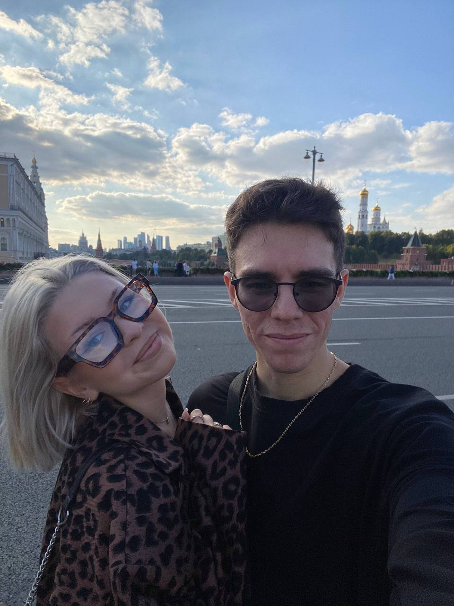

Как пользоваться Nano Banana
Короткая инструкция с примерами. Откройте бота и следуйте шагам ниже.
Промпт:
«Собака улыбается»
Ваш браузер не поддерживает видео.
3. Результаты
Несколько примеров:
Промпт:
«Корова играет на пианино»
Промпт:
«Птица чирикает на ветке»
Промпт:
«Добавь дракона огнедышащего»

Советы
Старайтесь формулировать запросы конкретно (стиль, тон, фон, детали).
Если кредиты закончились — откройте «Купить подписку» или используйте реферальный код.
Сложные запросы могут занимать больше времени — дождитесь ответа бота.
Сначала загружай фото, затем отдельным запросом промпт.
Если бот упал с ошибкой "Упс, что-то пошло не так при генерации. Попробуйте ещё раз позже.", попробуйте еще раз или поменяйте промпт.
Если за невалидную генерацию ошибочно списались кредиты, пишите в техподдержку @lechat_Alexey.
Перейти в начало